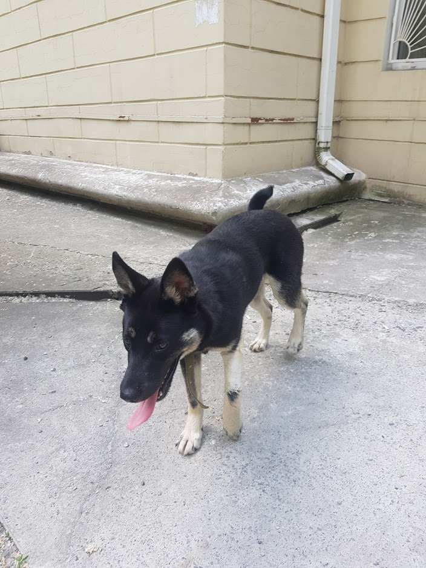
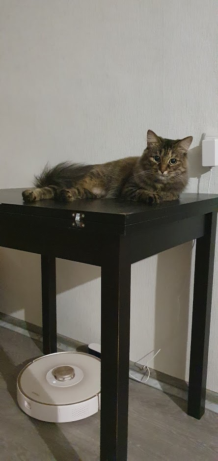
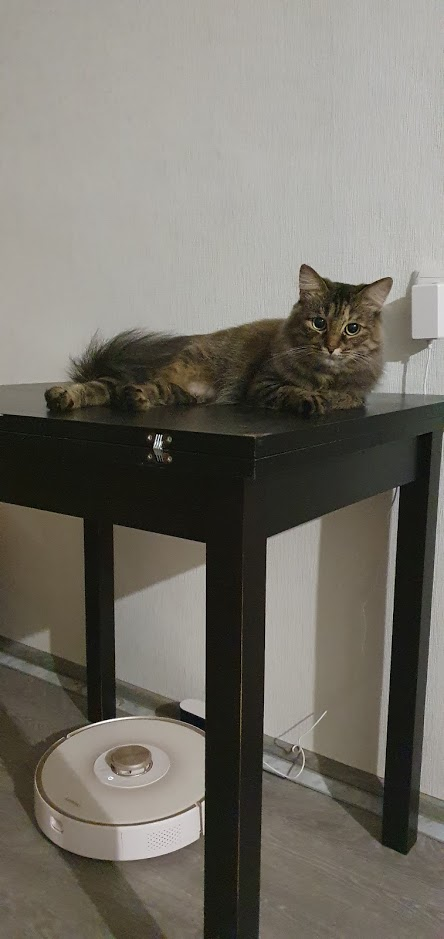

Родился, вырос и живу в Днепре
C 2002 года по 2012 учился в СОШ№45
C 2012 по 2016 учился в Сварочном техникуме им. Патона на специальности "Обслуживание компьютерных систем и сетей".
C 2016 по 2019 учился в Днипровском национальном университетe имени Олеся Гончара по той же специальности.
Люблю путешествовать и посещать новые места.
У нас с девушкой есть двое замечательных питомцев. Собака Кари и кошка Няша.
Также мы подобрали и выходили собаку Лапу, и теперь она живет у одной из наших бабушек.
 

На первом фото Лапа, на втором я и Кари, на третьем Няша.